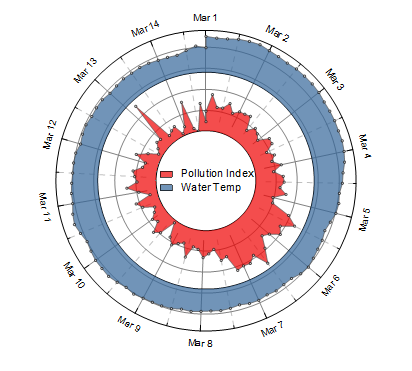

放射積み上げグラフ
Stacked-Radial-Plot

必要なデータ
X列を1つ、Y列を2つ以上用意します。
グラフ作成
メニューのを選択します。
テンプレート
StackedRadial.otpu(Originのプログラムフォルダにインストールされています。)
Notes
- このテンプレートは、X軸に基づいて、極角に使用されるスケールを決定します。例えば、日付Xまたは数値xを選択した場合、それを円としてプロットできるはずです。
- 追加の線の位置はメニューから決めることができ、R=すべてのy列の最小値である必要があります。
- 作図の詳細の積上げ形式タブで、積み上げオフセットは一定となり、 ("すべてのy列の最大値" - ”追加の線の値")*(1+10%).に基づき、メニューから計算できます。追加の線を相対位置で表示にチェックがされています。
- 方位軸の単位がカスタムの場合、円開始値＝すべてのXの最小値、円終端値=すべてのXの最大値+1となります。
- 基底から曲線以下の塗りつぶしをします。
- 放射軸の開始スケールは、すべてのy列の最小値です。
- 始点と終点はすべての線で接続されています。